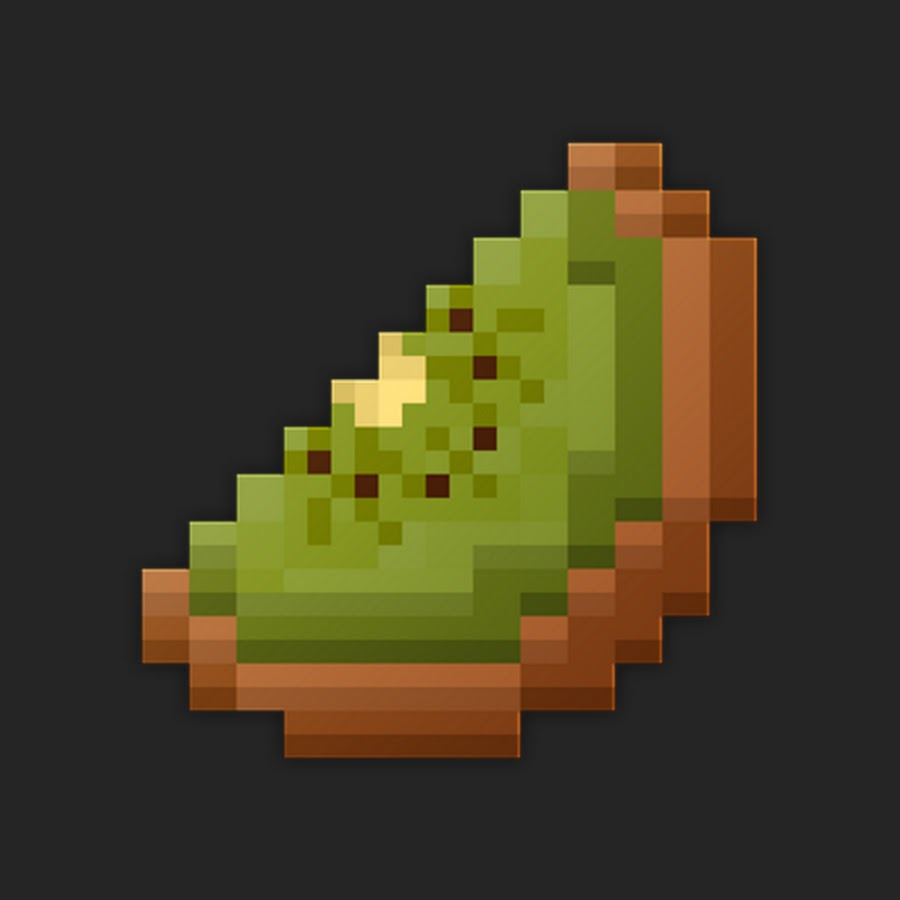

Polski serwer Minecraft działający na silniku PaperMC w wersji 1.21.11
KiwiSMP to przyjazna, polska społeczność graczy Minecraft, która stawia na wspólną rozgrywkę, kreatywne budowle i dobrą zabawę bez zbędnego przesycenia. Serwer działa na wydajnym silniku PaperMC, który zapewnia płynność i stabilność, a najnowsza wersja 1.21.11 pozwala cieszyć się wszystkimi nowościami Minecrafta.
Optymalizowany silnik PaperMC zapewnia wysoką wydajność i niskie opóźnienia.
Najnowsze mechaniki, moby i bloki z aktualnej wersji Minecrafta.
Grasz po polsku, poznajesz nowych znajomych i budujesz wspólne projekty.
Klasyczny survival z akcentem społecznościowym — bez zbędnych modyfikacji.